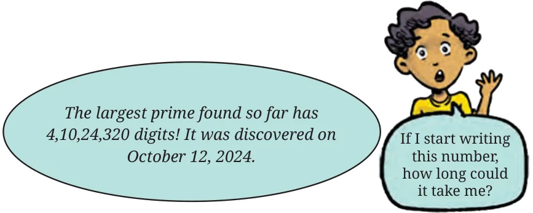

- Last year, we looked at common multiples, and common factors, and were also introduced to the amazing world of primes!
- In this chapter, we learnt a method to find the prime factorisation of a number.
- Finding all the factors of a number from its prime factorisation is easy but quite tedious - we have to list every possible subpart!
- The Highest Common Factor (HCF) is the highest among all the common factors of a group of numbers. Every common factor is contained in the prime factorisation of the number. To find the HCF, we include the minimum number of occurances of each prime across the prime factorisation of all the numbers.
- The Lowest Common Multiple (LCM) is the lowest among all the common multiples of a group of numbers. Every common multiple contains the prime factorisation of the numbers. To find the LCM, we include the highest number of occurrences of each prime across the prime factorisations of all the numbers.
- We explored more about HCF and LCM; we discovered related properties and patterns when numbers are consecutive, even, co-prime, etc.
- We learnt a procedure to get both the HCF and the LCM at the same time! We also saw how to make this even quicker!
- We learned some terms that are used when discussing mathematics, such as ‘conjecture’ and ‘generalisation’.

Mystery Colours!
You might have noticed and wondered about these different circle designs around the page numbers on each page! The picture below shows all the designs for the numbers from 1 to 100.
Try to decode the colour scheme for each number. There are several interesting patterns here. Share your observations with your classmates. Extending this scheme, colour the page numbers from \(101 - 110\).